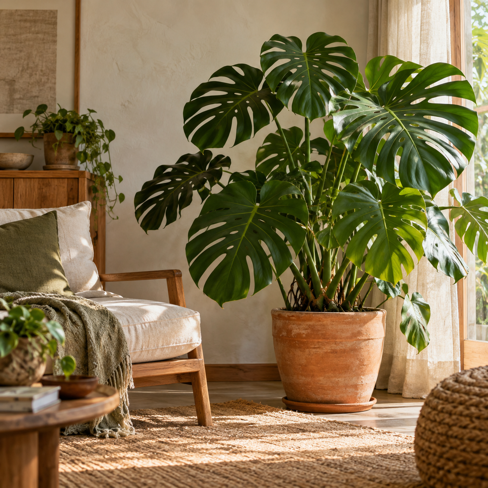
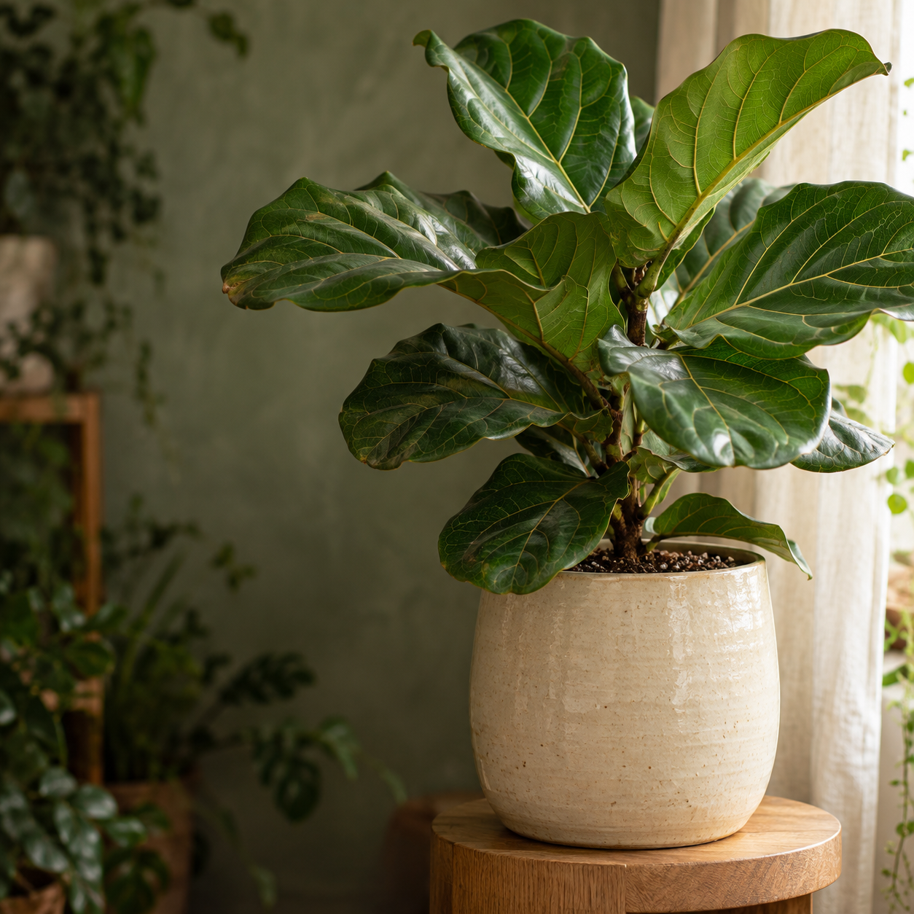

Apresentar o que você faz
Conteúdos que explicam seus serviços e ajudam o público a reconhecer quando precisa da sua solução.
O primeiro calendário é apresentado em até 10 dias úteis após o recebimento do briefing, dos acessos e dos materiais necessários.
Conversamos sobre sua oferta, seu público, seus diferenciais e o que a comunicação precisa alcançar.
Organizo os temas, os formatos e o calendário de conteúdo do mês.
Você recebe os textos e as peças para revisar. Os ajustes são reunidos e aplicados antes do agendamento.
Os conteúdos aprovados entram na programação, respeitando o calendário combinado.
Analiso os indicadores disponíveis para orientar os próximos conteúdos e identificar oportunidades de melhoria.
Escopo, aprovações e rotina de trabalho, antes da primeira conversa.
Você pode começar com materiais produzidos pelo celular, desde que tenham qualidade adequada. Em todos os planos, recebe roteiros e orientações para gravar, além da edição dos Reels com os materiais enviados. A captação presencial não está inclusa.
Não necessariamente. Podemos trabalhar com produtos, ambientes, processos e demonstrações. O formato depende da sua oferta e dos materiais disponíveis.
Sim. O serviço inclui o agendamento dos conteúdos aprovados, com os acessos e as permissões necessários.
Sim. Você recebe os conteúdos para aprovação. O calendário depende do envio dos materiais e do retorno dentro dos prazos combinados.
O atendimento ao público continua com sua empresa. Os planos cobrem planejamento, produção, agendamento e acompanhamento dos conteúdos.
Não. A gestão de anúncios e o investimento em mídia são separados da produção de conteúdo.
O trabalho começa pela organização da presença e pela consistência da comunicação. Alcance, contatos e vendas dependem também da oferta, da concorrência, do atendimento e de outros fatores. Não há promessa de vendas, viralização ou quantidade de seguidores.
Sim. O Essencial atende bem quem já tem um site. Se preferir um plano com site novo ou a integração com o site atual, conversamos sobre a melhor opção.
Sim. Após o pagamento do adicional do primeiro mês, o site e os acessos são entregues à sua empresa. A manutenção incluída na mensalidade termina com o encerramento do serviço e pode ser contratada separadamente.
O site previsto é institucional. Loja virtual, área de membros, agendamento avançado e integrações específicas recebem orçamento próprio.
A contratação proposta é mensal, sem prazo mínimo de permanência, com aviso de 30 dias para encerramento. O adicional do site é cobrado apenas no primeiro mês.
Me conte o que sua empresa oferece, como você cuida das redes hoje e o que gostaria de melhorar.
Eu ajudo a identificar o plano adequado e os próximos passos para sua marca se apresentar com mais consistência.

Um lar.Seu jeito.
precisa de
uma pausa?Deslize para descobrir.

Mais verde.Mais vida.
ou luz
indireta?A gente explica.
ao seu lar.
para crescer.Fale com a Casa Flora.